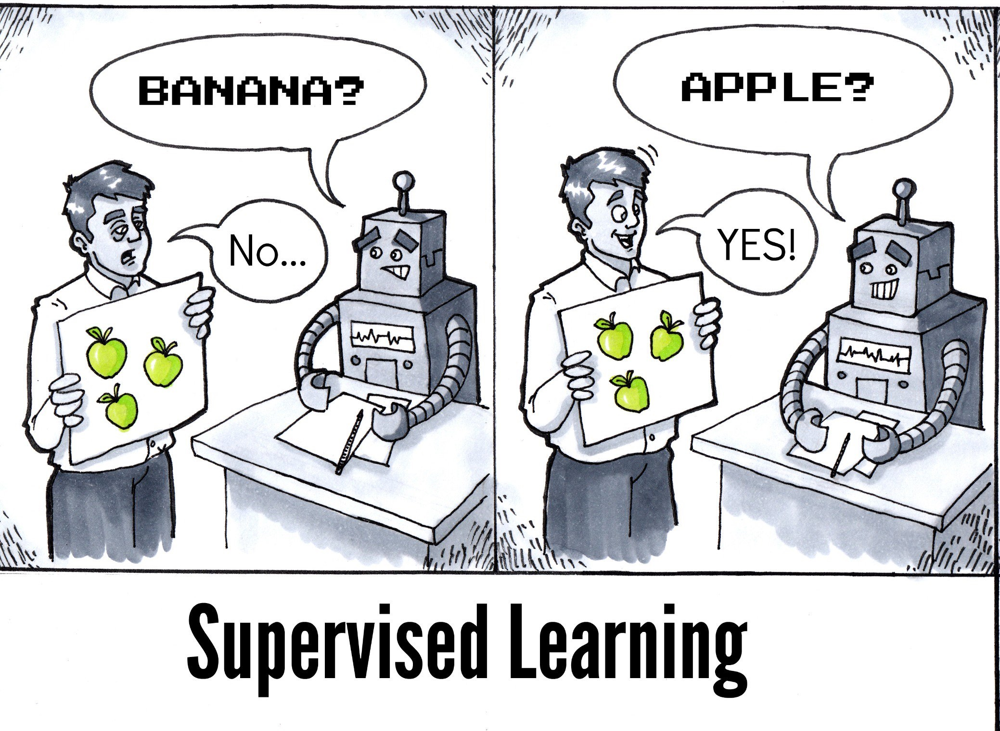
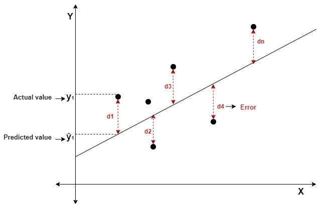
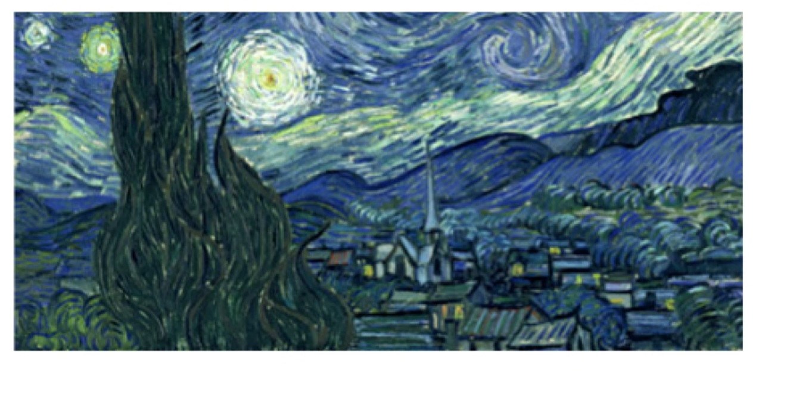
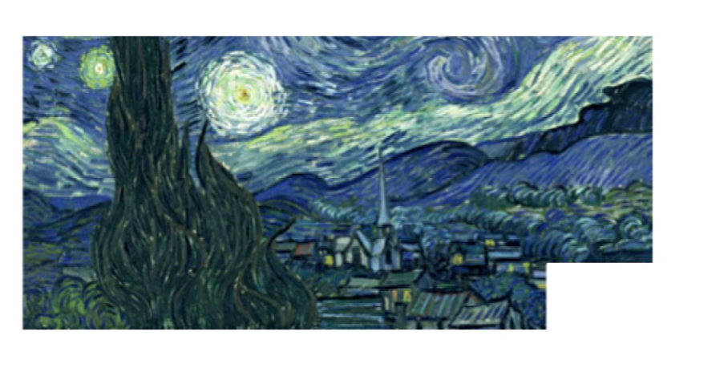

Un método supervisado es un tipo de técnica en machine learning en la que el modelo aprende a partir de ejemplos en los que ya conocemos la respuesta correcta. Es decir, trabajamos con un conjunto de datos que incluye tanto las variables de entrada (lo que usamos para predecir) como una variable de salida o etiqueta (lo que queremos predecir).

El aprendizaje se llama “supervisado” porque el modelo tiene un “supervisor”: los datos con la respuesta ya conocida. Así, el modelo ajusta sus parámetros comparando sus predicciones con las respuestas reales y corrigiendo sus errores. Una vez entrenado, podemos darle nuevos datos (sin respuesta) y el modelo intentará predecir el valor de la salida.
Nota
¡NUEVO TÉRMINO!
Un parámetro es un valor numérico que forma parte del modelo matemático o estadístico y que determina cómo se comporta ese modelo. Los parámetros no los escogemos “a mano”, sino que el modelo los aprende de los datos.
7.2 Tidymodels
tidymodels es un conjunto de paquetes de R diseñado para facilitar el trabajo con Machine Learning (ML) dentro de un marco coherente y organizado. Su objetivo es estandarizar el proceso de modelado, desde la preparación de datos hasta la evaluación de resultados, utilizando la misma filosofía del tidyverse: funciones consistentes, sintaxis clara y un enfoque centrado en los datos como tablas (tibbles).
El trabajo en ML no se limita a entrenar un modelo; incluye varios pasos que deben estar bien estructurados:
Preparación de datos: limpieza, creación de variables y transformación de predictores.
Definición del modelo: especificar qué tipo de algoritmo se va a usar (regresión, árboles de decisión, random forest, etc.).
Entrenamiento y validación: ajustar el modelo con los datos de entrenamiento y probarlo con datos nuevos para evitar sobreajuste.
Evaluación: medir el desempeño con métricas como RMSE, MAE o accuracy.
Comparación: contrastar distintos modelos bajo un mismo flujo de trabajo.
Tidymodels organiza todo este proceso bajo un flujo reproducible y consistente, lo que permite:
Reducir errores en la preparación de datos.
Comparar modelos con facilidad.
Mantener el código ordenado y entendible.
7.3 Regresión Lineal Simple
7.3.1 Recordar la ecuación de la recta
Debemos acordarnos algunos elementos básicos que aprendimos desde la escuela:
\[
y = \beta_0 + \beta_1x
\]
Donde:
y es la variable dependiente que se quiere predecir o estimar.
x es la variable independiente que se utiliza para predecir y.
β₀ es la intersección de la línea y.
β₁ es la pendiente de la línea (indica cuánto varía Y por cada unidad de X).
Tener en cuenta que si:
Si β₁ es positivo, Y aumenta cuando X aumenta.Es una relación directa / positiva.
Si β₁ es negativo, Y aumenta cuando X disminuye. Es una relación inversa / negativa.
Si β₁ es cero.Y no cambia cuando X varía. No existe relación entre las variables.
7.3.2 Definición
La regresión lineal es uno de los modelos más simples y fundamentales dentro del aprendizaje supervisado. Su objetivo es predecir un valor numérico y continua a partir de una o varias variables de entrada. Se basa en la idea de que existe una relación (aproximadamente lineal) entre esas variables explicativas y la variable que queremos predecir.
Para ello lo que hace es ajustar una línea recta (o un hiperplano, si hay varias variables) que mejor resuma la relación entre las variables de entrada (predictoras) y la variable de salida (respuesta).

7.3.3 Midiendo los errores: función de costo
La función de costo es una fórmula matemática que mide qué tan bien (o mal) el modelo se ajusta a los datos.
En regresión lineal, una de las más utilizadas es la Raiz del Error Cuadrático Medio (RMSE, por sus siglas en inglés).
Definición:
El RMSE mide la magnitud promedio del error en las predicciones de un modelo, penalizando más los errores grandes y expresándose en las mismas unidades de la variable de salida.
¿Qué significa?
Cada vez que el modelo predice un valor, podemos compararlo con el valor real.
La función de costo resume todos esos errores en un solo número.
Ese número nos indica la “calidad” del modelo: cuanto más pequeño sea, mejor está ajustada la recta a los datos.
El RMSE es útil porque se expresa en las mismas unidades de la variable de salida, lo que facilita su interpretación.
El modelo se equivoca en promedio 2.16 centímetros.
7.3.4 Explicación vs Predicción
En el campo del análisis de datos y del machine learning suele aparecer una tensión entre dos objetivos distintos: explicar fenómenos o predecir resultados futuros.
Explicación
El objetivo principal es entender las relaciones entre las variables.
Se busca interpretar los parámetros de un modelo: por ejemplo, cómo influye la educación en los ingresos, o qué efecto tiene una política pública en la reducción de la pobreza.
La prioridad no es tanto acertar en nuevas observaciones, sino tener coeficientes confiables y significativos que respalden hipótesis teóricas.
Se preocupa mucho por los supuestos estadísticos, la validez de las inferencias, la significancia y la causalidad.
Ejemplo: un economista que estima un modelo para probar si la inflación depende del precio de los metales.

Nota
Una analogía al propósito de la explicación.
El interés está en saber si la obra refleja fielmente la realidad, es decir, si los datos o el modelo “explican” lo que realmente ocurrió. La pintura sirve como ejemplo de representación: ¿es una descripción precisa de lo que había en la escena?
Predicción
El objetivo es obtener el mayor nivel posible de acierto en datos nuevos.
Importa más el desempeño predictivo que la interpretación de los parámetros.
Por ello que, en este ámbito, los modelos tienen licencia para ser “cajas negras” (random forests, redes neuronales) si eso mejora la precisión.
Se aceptan técnicas como regularización, ensambles o validación cruzada, que priorizan generalización más que interpretación.
Ejemplo: un banco que quiere predecir si un cliente dejará de pagar un crédito, sin importar tanto cuáles variables explican el fenómeno.

Nota
Una analogía al propósito de la predicción
A partir del cuadro, podemos reconstruir una parte que falta (¿podemos “llenar” el trozo ausente basándonos en lo que sí vemos?)
En estadística clásica y ciencias sociales, la tendencia ha sido hacia la explicación: probar teorías y entender causalidad.
En machine learning aplicado la tendencia es hacia la predicción: lograr resultados prácticos aunque el modelo no sea interpretable.
7.4 Una regresión paso a paso
En esta sección aprenderemos, paso a paso, cómo construir un modelo de machine learning utilizando regresión lineal. Veremos desde la preparación de los datos y la definición del modelo hasta su entrenamiento, evaluación y visualización de resultados, todo dentro del flujo de trabajo de tidymodels en R.
library(tidyverse)
── Attaching core tidyverse packages ──────────────────────── tidyverse 2.0.0 ──
✔ dplyr 1.1.4 ✔ readr 2.1.5
✔ forcats 1.0.0 ✔ stringr 1.5.1
✔ ggplot2 3.5.2 ✔ tibble 3.3.0
✔ lubridate 1.9.4 ✔ tidyr 1.3.1
✔ purrr 1.1.0
── Conflicts ────────────────────────────────────────── tidyverse_conflicts() ──
✖ dplyr::filter() masks stats::filter()
✖ dplyr::lag() masks stats::lag()
ℹ Use the conflicted package (<http://conflicted.r-lib.org/>) to force all conflicts to become errors
Mira nuestra data, hemos identificado que tenemos ciertos países en los cuales NO TENEMOS la medida de aml_index, es decir, tenemos un NA.
aml_faltante <- data |>select(pais, aml_index, pobreza) |>filter(is.na(aml_index))
aml_faltante
# A tibble: 16 × 3
pais aml_index pobreza
<chr> <dbl> <dbl>
1 Afghanistan NA 54.5
2 Argentina NA 25.7
3 Belize NA 41
4 Brazil NA 4.2
5 Burundi NA 64.6
6 Central African Republic NA 62
7 Comoros NA 44.8
8 Djibouti NA 23
9 El Salvador NA 32.7
10 Eritrea NA 50
11 Guyana NA 35
12 India NA 21.9
13 Lesotho NA 57
14 Nepal NA 25.2
15 Papua New Guinea NA 37
16 Rwanda NA 39.1
Queremos predecir su AML_index con la variable pobreza. Por eso vamos a utilizar la data completa en la que sí está la variable aml_index:
data<- data |>filter(!is.na(aml_index))
7.4.1 Paso 1: Análisis Exploratorio de Datos (EDA)
En este punto, utilizaremos los hallazgos detectados en las últimas dos clases.
summary(data$aml_index)
Min. 1st Qu. Median Mean 3rd Qu. Max.
3.000 4.605 5.160 5.261 5.835 8.140
summary(data$pobreza)
Min. 1st Qu. Median Mean 3rd Qu. Max.
2.60 14.35 22.20 25.77 31.75 72.30
7.4.2 Paso 1: Splitear la data
Dividir los datos en training y testing es un paso fundamental en machine learning. La idea es entrenar el modelo con una parte de la información y reservar otra parte, nunca vista por el modelo, para evaluar su capacidad de generalizar. Esto evita el sesgo de pensar que un modelo es “bueno” solo porque se ajusta bien a los datos con los que fue entrenado.
¿Por qué se hace el split?
🔹 Entrenamiento: el modelo aprende los patrones usando solo la porción de training.
🔹 Evaluación: el conjunto de test sirve para medir el poder predictivo en datos nuevos.
🔹 Prevención de sobreajuste (overfitting): si el modelo se ajusta demasiado a training, su desempeño en test revelará esa debilidad.
🔹 Realismo: simula lo que pasa en la práctica, cuando usamos el modelo para predecir casos que nunca había visto.
🔹 Comparación: permite elegir entre varios modelos el que realmente generaliza mejor.
# Dividimos nuestro dataset en dos partes: training y testingset.seed(2025)index <-initial_split(data) # Crea un objeto que contiene la "partición" de los datos.# Por defecto, 75% de las filas se van al training y 25% al testing.# (Se puede ajustar con el argumento prop = 0.8, por ejemplo).training_data <-training(index) # Extrae del split anterior la parte de entrenamiento,# es decir, el subconjunto de datos que usaremos para# ajustar (entrenar) nuestro modelo.testing_data <-testing(index) # Extrae del split anterior la parte de prueba,# es decir, el subconjunto de datos que NO verá el modelo# durante el entrenamiento y que servirá para evaluar# su capacidad de generalizar a datos nuevos.
Cómo vemos las particiones creadas?
dim(training_data)
[1] 59 15
dim(testing_data)
[1] 20 15
7.4.3 Paso 3: Preprocesamiento de datos (Feature Engineering)
El paquete recipes de tidymodels permite definir de manera ordenada y reproducible los pasos de preprocesamiento de los datos antes de entrenar un modelo de machine learning.
Primero se define la receta principal de tu modelo, que identifica la variable predicha y las predictoras, similar a una ecuación. En este casos utilizamos esta fórmula:
\[
VariablePredicha \sim Predictor
\]
Luego, si lo deseamos, podemos especificar qué transformaciones se aplicarán a las variables: desde tareas sencillas como eliminar valores perdidos o normalizar predictores, hasta imputaciones, creación de variables dummy o reducción de dimensionalidad. Cada transformación se añade como un step, y el flujo se encarga de aprender sus parámetros a partir del conjunto de entrenamiento y aplicarlos también al conjunto de prueba, evitando fugas de información (data leakage). De esta forma, recipes ofrece un marco flexible y seguro para preparar los datos de forma consistente en todo el proceso de modelado.
Por el momento, vamos a definir nuestra receta:
mi_receta <-recipe(aml_index ~ pobreza, data = training_data)
Luego de crear la receta, la podemos solicitar para ver qué es lo esta considerando:
En la fase de modelamiento, el primer paso es definir el modelo que utilizaremos. En este caso empleamos linear_reg(), que especifica una regresión lineal, y le asignamos un motor de cálculo mediante set_engine(“lm”).
mi_modelo_lm <-linear_reg() |>set_engine("lm")
7.4.5 Paso 5: Entrenamos el modelo
A continuación, iniciamos un workflow(), que es una estructura de tidymodels diseñada para integrar en un solo flujo el preprocesamiento de datos (receta) y el entrenamiento. Esto garantiza que todo el proceso se ejecute de manera ordenada, reproducible y sin fugas de información. Añadimos al workflow tanto la receta definida en la etapa de preprocesamiento como el modelo lineal.
══ Workflow ════════════════════════════════════════════════════════════════════
Preprocessor: Recipe
Model: linear_reg()
── Preprocessor ────────────────────────────────────────────────────────────────
0 Recipe Steps
── Model ───────────────────────────────────────────────────────────────────────
Linear Regression Model Specification (regression)
Computational engine: lm
Finalmente, y entrenamos este flujo con los datos de entrenamiento. De esta manera, se obtiene un objeto ajustado que estará listo para realizar predicciones y ser evaluado en el conjunto de prueba.
modelo_entrenado <- flujo_ml %>%fit(data = training_data) # Con el de ENTRENAMIENTO!
Si deseamos ver los coeficientes (estimates) del modelo podemos solicitarlo con tidy():
Entonces, en este caso el modelo para la predicción del AML_index sería el siguiente:
\[
AML = 4.27 + 0.04 * POBREZA
\]
7.4.6 Paso 6: Evaluamos el modelo
Una vez que el modelo ha sido entrenado, el siguiente paso es evaluar su desempeño. La evaluación consiste en medir qué tan bien el modelo logra predecir los valores de la variable de interés, comparando las predicciones con los valores reales. Para ello se utilizan métricas de error, como el RMSE (Root Mean Squared Error), que nos permiten cuantificar la calidad del ajuste y, sobre todo, estimar su capacidad de generalización cuando se aplica a nuevos datos.
Para ello, primero utilizamos el modelo generado para predecir con la nueva data:
Ahora vamos a medir cómo funciona nuestro modelo utilizándolo con data de testeo. Recuerda que en nuestra data de testeo podemos validar en contraste con el valor real.